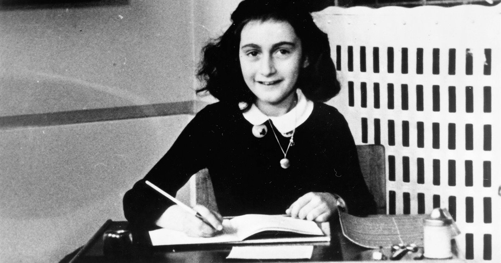
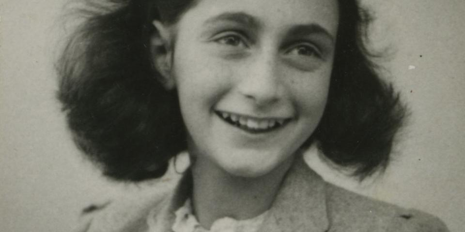
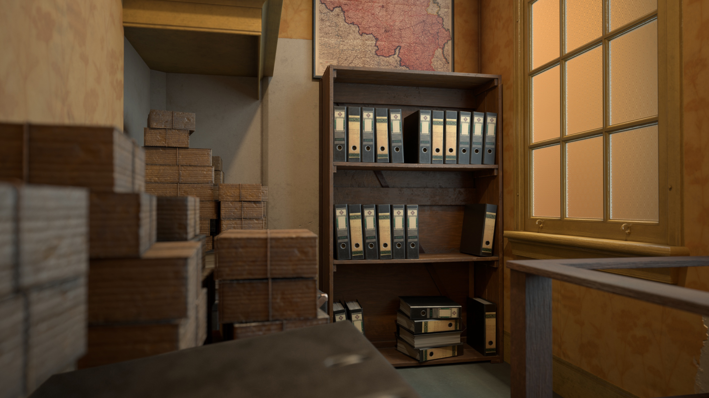
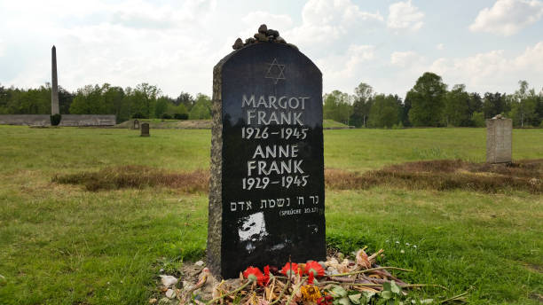
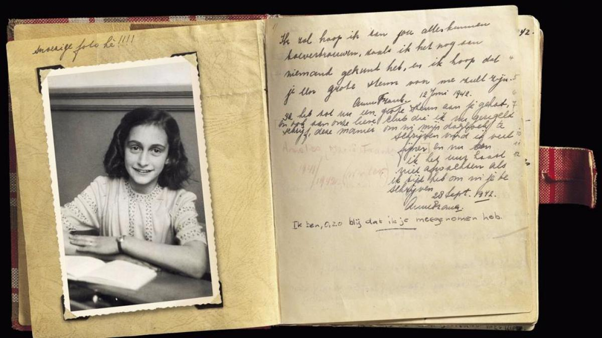

Ana Frank, fue una niña alemana con ascendencia judía mundialmente conocida gracias al Diario de Ana Frank, la edición de su diario íntimo en donde dejó constancia de los casi dos años y medio que pasó ocultándose con su familia y cuatro personas más de los nazis en Ámsterdam durante la Segunda Guerra Mundial.
Una vez fueron descubiertos en su escondite, Ana y su familia fueron capturados y llevados a distintos campos de concentración alemanes. El único superviviente de los ocho escondidos fue Otto Frank, su padre. Ana fue enviada al campo de concentración nazi de Auschwitz el 2 de septiembre de 1944 y, más tarde, al de Bergen-Belsen, donde murió de tifus alrededor de mediados de febrero de 1945, unos dos meses antes de que el campo fuera liberado. En 1947, apenas dos años después de terminada la guerra, su padre publicó el diario bajo el título La casa de atrás (en neerlandés, Het Achterhuis).
Infancia en Alemania

Annelies Marie Frank nació en Fráncfort del Meno (Hesse, Alemania), la segunda hija de Otto Heinrich Frank (1889-1980) y Edith Hollander (1900-1945), una familia de judíos alemanes. La familia vivía en una comunidad asimilada de ciudadanos judíos y otros que no lo eran; los niños se criaban con amigos católicos, protestantes y judíos. Los Frank eran judíos reformistas (también llamados progresistas); mantenían muchas tradiciones de la fe judía, pero no se ceñían demasiado a los preceptos. De sus padres, la creyente era Edith. Otto, que había participado como teniente del Ejército alemán durante la Primera Guerra Mundial y ahora era empresario, se ocupaba más de las formación de sus dos hijas. Disponía de una amplia biblioteca privada y animaba a las chicas a leer. A Anne la comparaban continuamente con su hermana Margot, tres años mayor que ella, y a quien se la tenía por bondadosa, ejemplar y discreta, mientras que Anne tenía muchos intereses y era extrovertida e impulsiva; se sentía en desventaja frente a Margot. Antes de que la política antijudía de los nacionalsocialistas sembrara el desasosiego en su vida y acabará por destruirla por completo, Anne vivía en Fráncfort una vida plácida con su familia y sus amigos. Tuvo ocasión de visitar a Alice Frank, su abuela paterna, en Basilea. Según el relato de su primo Bernhard, era una niña que no paraba de reír.
El 13 de marzo de 1933, unas pocas semanas antes de la toma del poder por parte de Hitler, el NSDAP alcanzó la mayoría en las elecciones municipales de Fráncfort, e inmediatamente hubo manifestaciones antisemitas. Otto Frank se dio cuenta de los grandes problemas que se les venían encima. El mismo año, Edith se mudó con las niñas a Aquisgrán a casa de su madre. Al principio, Otto se quedó en Fráncfort, pero luego le ofrecieron montar en Ámsterdam una sucursal de Opekta, una empresa alemana, y él se fue a los Países Bajos a poner en marcha los negocios y preparar todo para la llegada de su familia. Los Frank perdieron allí su ciudadanía alemana por aplicación de la Ley sobre los ciudadanos del Reich.
Exilio en Ámsterdam

En 1934 la madre de Anne se trasladó con sus dos hijas a Ámsterdam, donde su marido Otto llevaba ya varios meses preparando sus negocios y la futura vida de su familia. Se fueron a vivir a un barrio nuevo al sur de la ciudad, Rivierenbuurt, donde ya se habían instalado numerosas familias judías procedentes de Alemania, que se sentían más seguras en los Países Bajos que en lo que era en realidad su patria.
En el exilio, los padres continuaron preocupándose por la formación de sus hijas. Margot iba a una escuela pública y Anne a una Montessori, también pública. Margot tenía estupendos resultados en matemáticas, y a Anne se le daba bien la lectura y la escritura. Una de sus mejores amigas, Hannah Goslar, a quien llamaban Hanneli, contó posteriormente que Anne a menudo escribía en secreto y no quería decir nada del contenido. Sus recuerdos dieron lugar a un libro de Alison Leslie Gold, publicado en 1998. Otra amiga, Jacqueline van Maarsen, también relató algunos años después sus vivencias con Anne. En el verano de 1935 y 1936 Anne pasó unas vacaciones despreocupadas con su tía abuela en Suiza, y también hizo amistades allí.
A partir de 1933, Otto Frank estuvo a cargo de la sucursal holandesa de la empresa alemana Opekta. En 1938 fundó junto con su amigo Hermann van Pels, un carnicero que también había huido con su familia judía, otra empresa dedicada a la venta de especias. Otto hacía grandes esfuerzos por asegurarse unos ingresos, pues fue testigo de cómo el banco de su padre, que ya había salido debilitado de la crisis económica mundial de 1929, fue expropiado por los nacionalsocialistas.
En 1939 la abuela de Ana (madre de su madre Edith) se mudó a Ámsterdam con los Frank y se quedó con ellos hasta que falleció en 1942. Su familia se enteró, de primera mano, de la manera tan despiadada en que actuaban los nacionalsocialistas por el hermano de Edith, Walter Holländer, a quien detuvieron en la "noche de los cristales rotos" y llevaron al campo de concentración Sachsenhausen, antes de permitirle viajar a los Países Bajos con una autorización especial. Sin embargo, Otto Frank mantenía su optimismo, incluso tras enterarse de las sinagogas incendiadas. Calificó este suceso como un ataque de fiebre que haría entrar en razón a todos los participantes. Pero su esperanza se trocó en miedo cuando, en septiembre de 1939, el ataque a Polonia hizo estallar la Segunda Guerra Mundial.
A los judíos exiliados les preocupaba la amenaza que el ansia de expansión de Hitler podía suponer para los Países Bajos, los cuales intentaban mantenerse neutrales. El 10 de mayo de 1940, la Wehrmacht alemana atacó y ocupó el país. Las tropas neerlandesas se rindieron y la Reina Guillermina huyó a Londres, donde se exilió. Enseguida quedó patente que a los judíos residentes en Holanda les esperaba el mismo destino que a los de los otros territorios ocupados. Otto y Edith Frank vieron que ya no podían ocultarles a sus hijas la situación política. Hasta entonces, los padres habían intentado mantenerlas al margen y simular una cierta normalidad, pero ahora Ana estaba hecha un lío. Su carácter combativo la solía llevar a no plegarse; estaba acostumbrada a imponer sus puntos de vista. Otto intentó varias veces que le concedieran asilo en Estados Unidos o en Cuba, entre otros con la ayuda de su amigo Nathan Straus, quien tenía contactos con la primera dama Eleanor Roosevelt, pero no tuvo éxito.
Cada vez había más leyes "anti-judíos"; les quitaban sus derechos, se les excluía de la vida social y de todas las instituciones públicas. Para Ana, que coleccionaba con entusiasmo fotos de las estrellas de Hollywood, fue especialmente duro que le prohibieran ir al cine. Tuvo que ir a una escuela especial, el Liceo, lo cual supuso separarse de muchos amigos. Todos los judíos estaban obligados a acudir a que los registraran; a ellos y después incluso a sus bicicletas. Cuando se les hizo llevar la cruz judía, muchos neerlandeses se solidarizaron con ellos. Pero por otra parte se constituyó un partido nacionalsocialista neerlandés. Para proteger a su empresa de las estrictas inspecciones a las que se las sometía, Otto Frank le cedió la dirección, sobre el papel, a dos colaboradores suyos que eran arios.
El escondite en la casa trasera

Otto Frank había preparado un escondite en la parte trasera de la empresa, en el número 263 de Prinsengracht, como le había sugerido uno de sus colaboradores. El edificio principal cerca de la iglesia Westerkerk no llamaba la atención; era viejo y típico de ese barrio de Ámsterdam. La casa de atrás era una construcción de tres plantas unida a la fachada posterior del edificio principal. En el primer piso había dos habitaciones pequeñas con baño y WC, por encima una habitación grande y otra pequeña, y en esta última había una escalera de mano que llevaba a la buhardilla. En total eran unos 50 metros cuadrados. Delante de las oficinas había un pasillo, en el cual, oculta tras una estantería de libros, una puerta se abría hacia una escalera empinada que llevaba a la casa trasera.
Otto Frank le había pedido ayuda, anteriormente, a su secretaria Miep Gies (de soltera, Hermine Santrouschitz). Si bien ella tenía que contar con ser castigada en caso de que fueran descubiertos los judíos escondidos, accedió y asumió una difícil responsabilidad. Junto con su marido Jan Gies, los colaboradores de Otto, Kugler y Kleiman, así como Bep Voskuijl, ayudó a los habitantes de la casa trasera.
La situación de la familia Frank se tornó aguda cuando el 5 de julio de 1942 Margot Frank recibió una llamada de la "unidad central para emigración judía en Ámsterdam", que ordenaba su deportación a un campo de trabajo. Si Margot no hubiese acudido, habrían detenido a toda la familia. A raíz de la llamada, Otto Frank decidió trasladarse antes de lo previsto al escondite con su familia. Como los judíos no podían utilizar los transportes públicos, tuvieron que caminar varios kilómetros desde su casa hasta el refugio, portando cada uno todas las vestimentas que podía, dado que no debían correr el riesgo de ser vistos con equipajes. Al día siguiente, el 6 de julio, empezó para toda la familia una vida oculta, ya que parecía imposible huir de los Países Bajos, ahora ocupados. Helmut Silberberg, amigo de Ana, fue a visitarlos a su casa y se encontró con que ya no estaban. Para disimular, la familia había dejado desordenada su vivienda anterior, y habían abandonado un papel del que se podía deducir una huida repentina a Suiza. Una semana más tarde, la familia van Pels entró también en la casa trasera, como hizo después en noviembre de 1942 el dentista Fritz Pfeffer. Inicialmente, tenían la esperanza de recobrar la libertad al cabo de unas pocas semanas, pero pasaron más de dos años escondidos allí. Durante todo este tiempo no pudieron salir a la calle, y tenían que tener cuidado de no hacer ruidos que se pudieran oír desde fuera. El ambiente era tenso, y los refugiados vivían con miedo e incertidumbre, lo cual daba lugar a continuas tensiones. Los conflictos personales se hacían cada vez más visibles. A Ana le molestaba tener que compartir la habitación con Fritz Pfeffer, y ver su privacidad limitada. Ella a menudo discutía con su madre, cada vez más desesperada, lo cual chocaba con la manera de ser de la hija, y Otto intentaba que recuperaran la calma. Para Ana fue especialmente difícil pasar su adolescencia, época caracterizada por una actitud rebelde, encerrada con sus padres y obligada a adaptarse a ellos.
Miep Gies no solo traía alimentos, sino también noticias de la guerra. A medio día, los ayudantes comían junto con los refugiados, y al final de la tarde, cuando los otros empleados de la empresa habían abandonado el edificio, Ana y los demás podían acudir a la casa principal, donde escuchaban la BBC. Las noticias eran preocupantes: el 17 de julio de 1942 salió el primer tren con destino al campo de concentración de Auschwitz, y se privó a los judíos de la nacionalidad.
Ana leyó muchos libros durante este tiempo, que le sirvieron para mejorar su estilo y convertirse en una escritora autónoma. Su habilidad para la escritura fue aumentando, al igual que su confianza en sí misma como autora. Ella tenía sus dudas sobre si Otto realmente amaba a Edith; sospechaba que se había casado con ella por mera conveniencia. Ana, por su parte, comenzó a interesarse por Peter van Pels, un chico al que inicialmente había descrito como tímido y aburrido. Pero la relación terminó tras un episodio de pasión. Del diario también se desprende que Ana estaba al tanto de las deportaciones y del dinero que ofrecían de recompensa por delatar a judíos.
A finales de julio, se les unió la familia Van Pels (Van Daan): Hermann, Auguste y Peter de 16 años, y más tarde, en noviembre, llegó Fritz Pfeffer (Albert Dussel), dentista y amigo de la familia. Ana escribió sobre lo bueno que era tener otras personas con quienes hablar, pero las tensiones rápidamente se presentaron en este grupo de personas que debían convivir confinados en este escondite. Luego de compartir su habitación con Pfeffer, Ana terminó por considerarlo insoportable, y se peleó con Auguste van Pels, a quien consideraba fuera de sus cabales. Su relación con su madre se hizo difícil también y Ana escribió que sentía tener poco en común con ella por ser su madre demasiado abstraída. Algunas veces discutió con Margot, y escribió sobre un lazo inesperado que se había desarrollado entre ellas, aunque a quien se sentía más cercana era a su padre. Tiempo más tarde, también comenzó a apreciar la gentileza de Peter van Pels, y hasta llegaron a tener sentimientos románticos.
Ana pasaba la mayor parte de su tiempo leyendo y estudiando, al tiempo que continuaba escribiendo en su diario. Además de narrar los hechos transcurridos, Ana escribía sobre sus sentimientos, creencias y ambiciones, temas de los que no hablaba con los demás. Al sentirse más segura sobre su forma de escribir, al mismo tiempo que crecía y maduraba, trataba temas más abstractos, como sus creencias en Dios, o sobre cómo definía ella la naturaleza humana. Escribió regularmente hasta su anotación final, el 1 de agosto de 1944.
Ana, su familia y los acompañantes fueron arrestados por la Grüne Polizei ("policía verde") el 4 de agosto de 1944 y un mes después, el 2 de septiembre, toda la familia fue trasladada en tren de Westerbork (campo de concentración en el noreste de los Países Bajos) hacia Auschwitz, viaje que les llevó tres días. Mientras tanto, Miep Gies y Bep Voskuijl, dos de las personas que los habían protegido mientras estuvieron escondidos, encontraron y guardaron el Diario y otros papeles de Ana.
Desde su captura, se creyó que la familia fue delatada por un colaborador de la Gestapo, mientras que otras investigaciones afirmaban que el descubrimiento de los ocupantes fue casual, ya que los agentes de las SS estaban investigando delitos de empleo ilegal en el edificio y que la persecución de judíos no era su objetivo. En 2022 un equipo de investigadores internacionales, entre ellos el agente jubilado del FBI Vince Pankoke, llegó a la conclusión de que es muy probable que el notario judío Arnold van den Bergh fuese quien delatara el escondite de la familia Frank, en lo que habría sido un trato con los nazis a cambio de garantizar la seguridad de su propia familia, si bien algunos historiadores han puesto en duda esta teoría.
Ana, Margot y Edith Frank, la familia van Pels y Fritz Pfeffer no sobrevivieron a los campos de concentración nazis (aunque Peter van Pels murió durante las marchas entre campos). Margot y Ana pasaron un mes en Auschwitz II-Birkenau y luego fueron enviadas a Bergen-Belsen, donde murieron de tifus en marzo de 1945, poco antes de la liberación. Solo Otto logró salir del Holocausto con vida. Miep le dio el diario, que él editaría con el fin de publicarlo con el título Diario de Ana Frank, y que finalmente ha sido publicado en más de 70 idiomas
El Memorial en honor a Ana y Margot Frank está ubicado en el lugar donde se hallaba la fosa común correspondiente a la barraca donde murieron, en el campo de concentración de Bergen-Belsen.
Víctor Kugler (en ediciones antiguas nombrado como Kraler), Johannes Kleiman (Koophuis), Miep Gies y Elisabeth ''Bep'' Voskuijl eran los únicos empleados que sabían del escondite y, junto con Jan, el esposo de Gies, y Johannes Hendrik Voskuijl, el padre de Bep Voskuijl, eran quienes ayudaban a los Frank a sobrevivir durante su confinamiento. Ellos eran el único contacto entre el exterior y los ocupantes de la casa, y los mantenían informados de las noticias de la guerra y de los eventos políticos. Eran también los proveedores de todo lo necesario para la seguridad y supervivencia de la familia; el abastecimiento de comida resultaba cada vez más difícil a medida que el tiempo transcurría. Ana escribió sobre la dedicación y sobre los esfuerzos para levantarles el ánimo durante los momentos más peligrosos. Todos eran conscientes de que dar refugio a judíos se penaba en aquel momento con la muerte.
Arresto y fallecimiento

La mañana del 4 de agosto de 1944 la Grüne Polizei ("Policía del Orden", fuerza policial uniformada cuyas funciones ejecutivas recaían en la dirección de las SS) asaltó la achterhuis. Conducido por el sargento del Cuerpo de Protección (SS) Karl Silberbauer, de la Sección IVB4 del Servicio de Seguridad (SD), el grupo contaba al menos con tres agentes de la Policía de Seguridad. Los inquilinos fueron introducidos en camiones y trasladados para someterlos a interrogatorio. Victor Kugler y Johannes Kleiman fueron encarcelados, pero a Miep Gies y Bep Voskuijl les permitieron marcharse. Más tarde regresarían a la achterhuis, donde encontraron las anotaciones de Ana desparramadas por el suelo. Las recogieron, así como varios álbumes de fotos de la familia, y Gies se propuso devolvérselos a Ana cuando la guerra hubiese terminado. En 2022 un equipo de investigadores internacionales, entre ellos el agente jubilado del FBI Vince Pankoke, concluyeron que el notario judío Arnold van den Bergh fue quien delató el escondite de la familia Frank, en lo que habría sido un trato con los nazis a cambio de garantizar la seguridad de su propia familia.
Kugler y Johannes Kleiman fueron encarcelados, pero a Miep Gies y Bep Voskuijl les permitieron marcharse. Más tarde regresarían a la achterhuis, donde encontraron las anotaciones de Ana desparramadas por el suelo. Las recogieron, así como varios álbumes de fotos de la familia, y Gies se propuso devolvérselos a Ana cuando la guerra hubiese terminado. En 2022 un equipo de investigadores internacionales, entre ellos el agente jubilado del FBI Vince Pankoke, concluyeron que el notario judío Arnold van den Bergh fue quien delató el escondite de la familia Frank, en lo que habría sido un trato con los nazis a cambio de garantizar la seguridad de su propia familia.
Llevaron a los detenidos de la casa a un campo en Westerbork, aparentemente un campo de tránsito por el que hasta ese momento habían pasado más de 100 000 judíos. Una vez allí, los ocho escondidos fueron calificados como "criminales" por no acatar la orden de presentarse voluntariamente a trabajos forzados, y haberse escondido. Fueron llevados a los "Barracones S", una zona del campo que estaba separada del resto por una gran cerca de púas. Se les prohibió el uso de sus propias ropas, y se les dio un uniforme azul con parches rojos y de calzado unos zuecos. Aunque los hombres y mujeres estaban en barracas distintas, podían verse durante la tarde y la noche.
El 2 de septiembre, el grupo fue deportado, en el que sería su último traslado, desde Westerbork hasta el campo de concentración de Auschwitz. Tras tres días de viaje llegaron a su destino, y los hombres y mujeres fueron separados según su sexo, para no volverse a ver más. De los 1019 recién llegados, 549 –incluyendo niños menores de 15 años– fueron seleccionados y enviados directamente a las cámaras de gas, en las que fueron asesinados. Ana había cumplido 15 años tres meses antes y se libró, y aunque todos los de la achterhuis sobrevivieron a la selección, Ana creyó que su padre había sido asesinado.
Junto con las otras mujeres no seleccionadas para la muerte inmediata, Ana fue obligada a permanecer desnuda para desinfectarla, le raparon la cabeza y le tatuaron un número de identificación en el brazo. Durante el día empleaban a las mujeres en realizar trabajos forzados y por la noche las hacinaban en barracones frigoríficos. Las enfermedades se propagaban velozmente y en poco tiempo Ana terminó con la piel cubierta de costras.
El 28 de octubre comenzó la selección para reubicar a las mujeres en Bergen-Belsen. Más de 8000 mujeres, entre ellas Ana Frank, Margot Frank y Auguste van Pels, fueron trasladadas, pero Edith Frank se quedó atrás. Se levantaron tiendas para acoger a los prisioneros, entre ellos Ana y Margot. Con el aumento de la población, se incrementó rápidamente la tasa de mortalidad debido a enfermedades. Ana pudo juntarse por un breve periodo con dos amigas, Hanneli Goslar (llamada «Lies» en el diario) y Nanette Blitz, quienes sobrevivieron a la guerra. Contaron cómo Ana, desnuda salvo por un trozo de manta, les explicó que, infestada de piojos, se había despojado de sus ropas. La describieron como calva, demacrada y temblorosa, pero, a pesar de su enfermedad, les dijo que estaba más preocupada por Margot, cuyo estado parecía más grave. Goslar y Blitz no llegaron a ver a Margot, que permaneció en su litera, demasiado débil. Asimismo, Ana les dijo que estaban solas, y que sus padres habían muerto.
En febrero de 1945, una epidemia de tifus se propagó por todo el campo; se estima que terminó con la vida de 17 000 prisioneros. Los testigos contaron más tarde que Margot, debilitada como estaba, se cayó de su litera y murió como consecuencia del golpe, y que pocos días después Ana también murió, alrededor de mediados de febrero. Unos dos meses después el campo sería liberado por tropas británicas, el 15 de abril de 1945.
Tras la guerra, de los aproximadamente 110 000 judíos que fueron deportados desde los Países Bajos durante la ocupación nazi, solo 5000 habían sobrevivido. De los ocho inquilinos de la achterhuis, solo el padre de Ana salió con vida. Herman van Pels fue gaseado justo tras la llegada del grupo a Auschwitz-Birkenau el 6 de septiembre de 1944. Su esposa Auguste murió entre el 9 de abril y el 8 de mayo de 1945 en Alemania o en Checoslovaquia. Su hijo Peter falleció el 5 de mayo de 1945 en el campo de concentración de Mauthausen, Austria, después de ser trasladado andando desde Auschwitz.
El Dr. Friedrich Pfeffer (o Sr. Dussel) murió el 20 de diciembre de 1944 en el campo de concentración de Neuengamme. La madre de Ana, Edith Hollander, falleció el 6 de enero de 1945 en Birkenau. Johannes Kleiman y Victor Kugler, socios comerciales de Otto Frank que habían ayudado a los anteriores mientras permanecieron escondidos, fueron arrestados por ayudar a la familia Frank. Ambos fueron sentenciados a realizar un Arbeitseinsatz (servicio de trabajo) en Alemania, y sobrevivieron a la guerra.
El diario de Ana Frank

Otto Frank sobrevivió y regresó a Ámsterdam. Fue informado del fallecimiento de su esposa y del traslado de sus hijas a Bergen-Belsen, quedando con la esperanza de que lograran sobrevivir. En julio de 1945, la Cruz Roja confirmó las muertes de Ana y Margot, y fue solo entonces cuando Miep Gies le dio el Diario. Tras leerlo, Otto comentó no haberse dado cuenta de cómo Ana había mantenido un registro tan exacto y bien escrito de su estadía juntos. Tratando de cumplir póstumamente el deseo de Ana expresado en el Diario de convertirse en escritora, decidió intentar publicarlo. Al preguntársela muchos años después sobre su primera reacción, respondió sencillamente: «Nunca supe que mi pequeña Ana era tan profunda».
El Diario de Ana se inicia como una expresión privada de sus pensamientos íntimos, expresando la intención de nunca permitir que otros lo leyeran. Describe cándidamente su vida, su familia y compañeros y su situación, mientras empieza a reconocer su ambición de escribir novelas y publicarlas. En el verano de 1944, escuchó una transmisión de radio de Gerrit Bolkestein miembro del gobierno neerlandés en el exilio que decía que al terminar la guerra crearía un registro público de la opresión sufrida por la población de su país bajo la ocupación alemana. Mencionó la publicación de cartas y diarios, de manera que Ana decidió que contribuiría con su Diario. Comenzó a corregir su escritura, a eliminar secciones y a reescribir otras, en vistas a una posible publicación. A su cuaderno original, anexó varios cuadernos adicionales y hojas sueltas. Creó pseudónimos para los miembros del grupo y sus benefactores. La familia van Pels se convirtió en Hermann, Petronella y Peter van Daan; Fritz Pfeffer pasó a llamarse Albert Dussel. Otto Frank utilizó la versión original del Diario, conocida como «versión A», y la versión corregida, conocida como «versión B», para producir la primera versión para ser publicada. Retiró algunos pasajes, sobre todo aquellos en los que se refería a su esposa en términos poco halagadores, así como secciones en las que hablaba de detalles íntimos respecto a su floreciente sexualidad. Restauró las verdaderas identidades de su familia, pero retuvo los pseudónimos de las otras personas.
Frank llevó el diario a la historiadora Anne Romein, quien intentó publicarlo, sin éxito. Luego se lo pasó a su esposo Jan Romein, quien escribió un artículo sobre el libro con el título de «Kinderstem» («La voz de una niña») en el periódico Het Parool el 3 de abril de 1946. Escribió que el diario «pausadamente expresado en la voz de una niña, muestra todos los odios del fascismo, mejor que todas las evidencias de los juicios de Núremberg juntas». Su artículo atrajo la atención de los editores y el Diario fue publicado en los Países Bajos en 1947 por el editor Contact, de Ámsterdam, bajo el título Het Achterhuis (La casa de atrás). Fue reimpreso en 1950. En abril de 1955 apareció la primera traducción del diario en español bajo el título Las habitaciones de atrás (traducción de Mª Isabel Iglesias, editorial Garbo, Barcelona).
Albert Hackett escribió una pieza de teatro basada en el Diario, estrenada en Nueva York en 1955, que recibió el Premio Pulitzer de Teatro. La pieza fue llevada al cine en 1959 con el título El diario de Ana Frank. Fue protagonizada por la actriz Millie Perkins, y Shelley Winters, que caracterizó a la señora Van Pels, consiguiendo el Óscar a Mejor Actriz Secundaria, que entregó a la Casa de Ana Frank. La película obtuvo una buena acogida y se hizo acreedora de otros dos premios Óscar. Sin embargo, no se convirtió en un gran éxito de taquilla, aunque despertó tal atención que aumentó el interés mundial por el libro. El Diario fue creciendo en popularidad con el pasar de los años, y hoy es lectura obligatoria en bachillerato de varios países y en varios estados de los Estados Unidos. En febrero de 2008 se estrenó en Madrid el musical El Diario de Ana Frank - Un Canto a la Vida, siendo la primera vez que la Fundación Ana Frank cedía los derechos a una empresa para representar un musical sobre Ana Frank y su obra en todo el mundo.
En 1986, se publicó una edición crítica del Diario. Esta edición compara secciones originales con secciones modificadas por el padre, e incluye una discusión relativa a su autenticidad así como datos históricos sobre su familia.
En 1988, Cornelis Suijk —antiguo director de la Fundación Ana Frank y presidente de la Fundación para la educación sobre el Holocausto de los Estados Unidos— anunció que había obtenido cinco páginas que habían sido eliminadas por Otto Frank del Diario antes de su publicación. Suijk afirma que Otto Frank le entregó esas páginas poco antes de su muerte en 1980. Las páginas eliminadas contienen comentarios muy críticos de Ana Frank hacia la relación matrimonial de sus padres y hacia su madre. La decisión de Suijk de reclamar derechos de autor sobre las cinco páginas para con ello financiar su fundación en los Estados Unidos causó controversia. El Instituto Neerlandés de Documentación de Guerra, actual propietario del manuscrito, solicitó que le fueran entregadas las páginas faltantes. En 2000 el Ministerio Neerlandés de Educación, Cultura y Ciencia accedió a donar 300 000 dólares a la fundación de Suijk y las páginas fueron entregadas en 2001. Desde entonces, han sido incluidas en las nuevas ediciones del Diario.
En 2004, se publicó un nuevo libro en los Países Bajos, titulado Mooie zinnen-boek (Libro de frases bonitas), que contenía fragmentos de libros y poemas cortos que Ana recopiló, por consejo de su padre, durante su permanencia en la achterhuis.